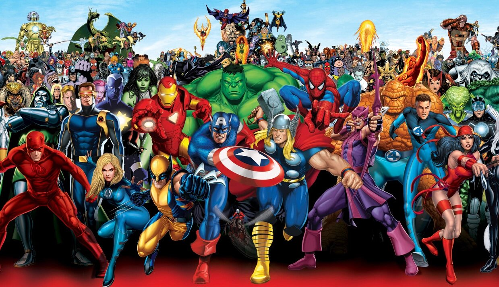

Heróis da Marvel

Descrição
A Marvel Comics é uma editora norte-americana de mídias relacionadas. Hoje a Marvel Comics é considerada a maior editora de histórias em quadrinhos do mundo. Em 2009, a The Walt Disney Company, adquiriu a Marvel Entertainment, a empresa mãe da Marvel.
Marvel Comics foi fundada por volta de 1930 e 1940 por Martin Goodman, com o nome de Timely Comics. Goodman, um editor de revistas pulp que começou a vender histórias de faroeste em 1933, expandiu suas atividades para um emergente - e até então bastante popular - mercado de revistas de histórias em quadrinhos originais.
Outras mídias
Televisão
Várias séries televisivas, tanto live-action como animadas, foram baseadas nos personagens da Marvel Comics, como Homem-Aranha, X-Men e Quarteto Fantástico. Os pioneiros foram a animação The Marvel Super Heroes, produzida pelo estúdio Grantray-Lawrence Animation, conhecida como desenhos desanimados por animação limitada geralmente tirando a arte dos quadrinhos,[23] e The Incredible Hulk, com Lou Ferrigno como o Hulk e Bill Bixby como seu alter-ego Dr. Banner.
Alguns heróis
Heróis mais fortes
- One-Above-All
- Tribunal Vivo
- Beyonder
- Eternidade